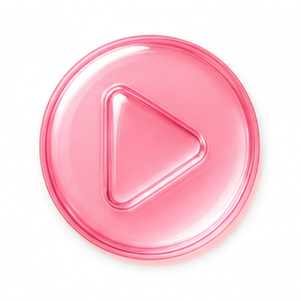
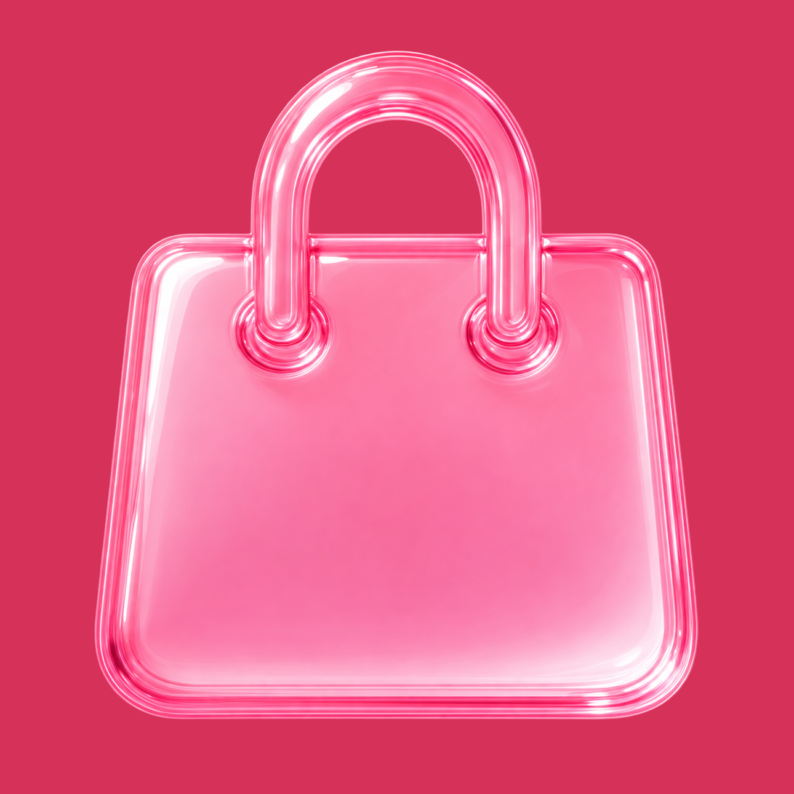
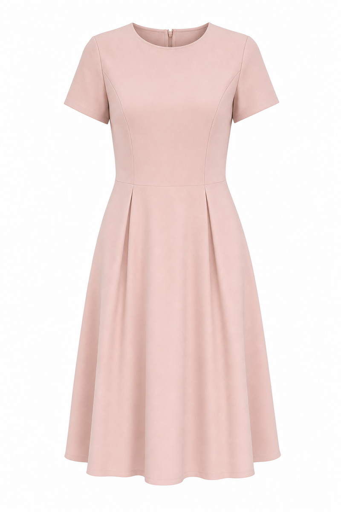

<!doctype html>
<meta charset="utf-8">
<title>Mira — App Store screenshots</title>
<link rel="preconnect" href="https://fonts.gstatic.com" crossorigin>
<link href="https://fonts.googleapis.com/css2?family=Instrument+Serif:ital@0;1&family=Outfit:wght@300;400;500;600;700&display=swap" rel="stylesheet">
<style>
:root{
  /* the gel ramp — straight off Brand/mira-gloss.html */
  --spec:#FFFFFF;   --gloss:#FEE9F1;  --g100:#FECCDB;  --g300:#FDA4BC;
  --g500:#FB7F9F;   --g700:#EE466E;   --core:#D53159;  --rim:#A81840;
  /* neutrals, biased plum — never grey */
  --ground:#FFF9FB; --paper:#FFFFFF;  --shell:#F6E4EA; --hair:#EFD5DE;
  --ink:#4A1F2E;    --mute:#87606D;   --on-gel:#FFFFFF; --on-pale:#5E1B31;
  --serif:"Instrument Serif",Georgia,"Times New Roman",serif;
  --sans:"Outfit",-apple-system,BlinkMacSystemFont,"Segoe UI",Helvetica,sans-serif;
  --scale:.235;                /* preview only — panels are always 1290x2796 */
}
*{box-sizing:border-box}
body{margin:0;background:#2B1420;color:#fff;font-family:var(--sans)}
header{padding:22px 28px;display:flex;gap:22px;align-items:center;flex-wrap:wrap}
header h1{font-family:var(--serif);font-weight:400;font-size:24px;letter-spacing:3px;margin:0}
header .note{font-size:12.5px;color:#E7BFCD;line-height:1.55;font-weight:300}
header .note b{font-weight:600;color:#fff}
header input[type=range]{accent-color:var(--g700)}
/* the App Store sets its cards a hair apart, not a gutter apart — and the gap is a
   fraction of the card, so it has to ride --scale like everything else */
.rail{display:flex;gap:calc(42px * var(--scale));padding:10px 28px 60px;
  overflow-x:auto;align-items:flex-start}
.slot .cap{font-size:11px;letter-spacing:2px;text-transform:uppercase;color:#E7BFCD;
  padding:0 0 9px 2px;display:flex;gap:10px;align-items:center;font-weight:500}
.slot .cap button{font:600 10px/1 var(--sans);letter-spacing:1.4px;color:#fff;border:0;
  cursor:pointer;padding:6px 13px;border-radius:999px;
  background-image:linear-gradient(180deg,#F97FA3 0%,#EE4B74 40%,#C7264F 100%);
  box-shadow:inset 0 0 0 1px rgb(168 24 64/.8), inset 0 1px 0 rgb(255 255 255/.45)}
.frame{width:calc(1290px * var(--scale));height:calc(2796px * var(--scale));overflow:hidden;
  border-radius:calc(64px * var(--scale));box-shadow:0 8px 22px rgb(0 0 0/.38)}

/* ── the panel. 1290x2796 = App Store iPhone 6.9". Never change these two numbers. ── */
.panel{width:1290px;height:2796px;transform:scale(var(--scale));transform-origin:0 0;
  position:relative;overflow:hidden;isolation:isolate;
  display:flex;flex-direction:column;align-items:center;padding:150px 58px 0;
  background-color:var(--ground);color:var(--ink)}
.panel.flip{justify-content:flex-end;padding:0 58px 150px}
.panel.flip .copy{order:2;margin-top:104px}

/* GEL panel — flat brand pink, white copy. No ramp and no specular: the light end of the
   ramp was sitting under the titles at 2.7:1. Flat --core holds 4.8:1 everywhere. */
.panel.gel{color:var(--on-gel);background-color:var(--core)}
/* PALE panel — flat, plum copy */
.panel.pale{color:var(--on-pale);background-color:var(--g100)}
.panel > *{position:relative;z-index:2}

/* The frame paints OVER the artwork, not under it. As an inset shadow on the panel's own
   background layer it died beneath anything that reached an edge — and the phone, the bag
   and the placeholder screen all bleed off the foot, which left four of the five cards
   framed on three sides. A top layer closes all four sides on every panel. */
.panel::after{content:"";position:absolute;inset:0;z-index:4;pointer-events:none;
  box-shadow:inset 0 0 0 10px rgb(168 24 64/.95),
             inset 0 0 0 22px rgb(255 255 255/.30)}
.panel.pale::after{box-shadow:inset 0 0 0 10px rgb(238 70 110/.85),
                              inset 0 0 0 22px rgb(255 255 255/.55)}

/* HERO — no device, no shot. Name up top, the mark in the middle, the promise at the foot.
   Plum ink up top on the pale end, white down at the foot on the deep end. */
.panel.hero{justify-content:space-between;padding:250px 96px 210px}
.wordmark{font-family:var(--serif);font-weight:400;font-size:92px;line-height:1;
  letter-spacing:16px;text-transform:uppercase;opacity:.72;margin:0 0 34px;padding-left:16px}
.panel.hero .head{font:600 152px/1.02 var(--sans);letter-spacing:-4px}
.mark{width:820px;height:820px;flex:0 0 auto;object-fit:contain;
  filter:drop-shadow(0 46px 80px rgb(168 24 64/.38))}
.panel.hero .sub{font:600 62px/1.24 var(--sans);letter-spacing:-1px;max-width:18ch;
  opacity:.9;margin:0;text-align:center}
/* BRAND WALL — the app's own BrandRow at poster size: square marks, not a list of
   words, and a +99 tile so five logos don't read as "five stores". */
.panel.shops{padding:150px 58px 0}
.wall{display:grid;grid-template-columns:repeat(2,470px);gap:64px;margin:96px 0 0}
.tile{width:470px;height:470px;border-radius:127px;overflow:hidden;background:#fff;
  display:grid;place-items:center;box-shadow:0 24px 50px -18px rgb(120 12 44/.45)}
.tile img{width:100%;height:100%;object-fit:cover;display:block}
.tile.more{background:var(--gloss);color:var(--on-pale);
  font:600 141px/1 var(--sans);letter-spacing:-4px}
/* the bag closes the panel — logos above it, so the row reads as "shop there, wear it here" */
/* Bleeds off the bottom, top half on the slide. Its field is cut to exactly --core so
   there is no seam — which is also why it can stop 22px short of each edge and let the
   panel's inset rings run the full height instead of dying behind it. */
.panel .bag{position:absolute;left:22px;bottom:-623px;width:1246px;height:1246px}
.copy{text-align:center;max-width:1020px}
.head{font:600 136px/1.04 var(--sans);letter-spacing:-4px;margin:0}
.head em{font-style:italic}
/* the play disc lifted off Brand/elements-grid-pink.png — reads as "this is a video"
   before anyone reads the word next to it */
.play{height:.9em;width:.9em;vertical-align:-.14em;margin-left:.16em;border-radius:27%;
  box-shadow:0 14px 30px -10px rgb(120 12 44/.5)}

/* device — paper puck with the gel rim, bleeds off the bottom */
.device{margin-top:56px;width:1116px;flex:0 0 auto;border-radius:96px;padding:14px;
  background:var(--paper);
  box-shadow:inset 0 0 0 2px rgb(168 24 64/.16), 0 70px 120px -40px rgb(168 24 64/.46)}
.panel.gel .device{box-shadow:inset 0 0 0 2px rgb(255 255 255/.5), 0 70px 120px -40px rgb(120 12 44/.55)}
.device .screen{width:100%;aspect-ratio:1290/2796;border-radius:84px;overflow:hidden;
  position:relative;background:var(--gloss);display:flex;align-items:center;justify-content:center}
/* the piece that was pasted, laid on the shot of it being worn — the whole promise of the
   app in one corner. Anchored to the panel, not the screen: the phone bleeds off the bottom
   and anything pinned inside it would be cut off with it. */
.panel .chip{position:absolute;left:96px;bottom:104px;z-index:3;width:300px;
  aspect-ratio:1024/1536;object-fit:cover;border-radius:34px;background:#fff;
  box-shadow:0 30px 60px -16px rgb(74 4 26/.55), 0 0 0 5px #fff}
/* The app's own LivePill (MirrorView.swift), at the size and corner the app puts it.
   A play triangle promises a recording; a pulsing dot promises now, which is the claim
   Mira is actually making. Floor of 0.55 on the blink so a still export never catches it
   mid-blink and reads as a dead badge. */
.device .screen .live{position:absolute;z-index:4;left:52px;top:64px;
  display:flex;align-items:center;gap:18px;background:var(--paper);border-radius:999px;
  padding:24px 38px;box-shadow:0 16px 34px -8px rgb(74 4 26/.5)}
.device .screen .live i{width:30px;height:30px;border-radius:50%;background:var(--g500);
  animation:beat 1.8s ease-in-out infinite}
.device .screen .live span{font:600 40px/1 var(--sans);letter-spacing:6px;
  text-transform:uppercase;color:var(--ink)}
@keyframes beat{0%,100%{opacity:1}50%{opacity:.55}}
.device .screen img,.device .screen video{width:100%;height:100%;object-fit:cover;display:block}
/* BEFORE / AFTER — a diagonal step, not a pair of columns: before high on the left,
   after low on the right, and the arrow swings out of the bottom of the first into the
   side of the second. Reading order does the arguing. */
.pair{position:relative;margin:auto 0;width:1174px;height:1830px}
.pair figure{position:absolute;margin:0;width:600px;height:900px;border-radius:64px;
  overflow:hidden;background:var(--paper);display:grid;place-items:center;
  box-shadow:0 0 0 10px var(--paper), 0 50px 90px -30px rgb(74 4 26/.6)}
.pair .was{left:0;top:0;transform:rotate(-3.5deg)}
.pair .now{right:0;top:930px;z-index:2;transform:rotate(3deg)}
.pair figure img{width:100%;height:100%;object-fit:cover;display:block;grid-area:1/1}
.pair figcaption{position:absolute;top:34px;left:34px;z-index:2;
  font:600 32px/1 var(--sans);letter-spacing:4px;text-transform:uppercase;
  color:var(--core);background:var(--paper);padding:17px 26px;border-radius:999px;
  box-shadow:0 10px 24px -8px rgb(74 4 26/.45)}
/* the packshot that started it, dropped in the quarter the diagonal leaves empty. Tilted,
   because a thing you pasted in should look put down rather than laid out. */
.pair .drop{position:absolute;right:4px;top:140px;z-index:3;width:400px;
  aspect-ratio:1024/1536;object-fit:cover;border-radius:40px;background:var(--paper);
  transform:rotate(6deg);
  box-shadow:0 0 0 10px var(--paper), 0 40px 70px -20px rgb(74 4 26/.6)}
/* the app's own sparkle, parked in the seam between the garment and the wearer — the one
   place on the panel where the change actually happens. Cut to alpha so it can sit on both. */
.pair .spark{position:absolute;left:760px;top:720px;width:300px;z-index:4;
  transform:rotate(-8deg);filter:drop-shadow(0 26px 34px rgb(74 4 26/.55))}
/* drawn, not assembled: one curved stroke with round caps and a fat open head, sitting in
   the empty quarter the diagonal leaves behind */
.pair .arw{position:absolute;left:44px;top:958px;width:500px;height:738px;z-index:1;
  overflow:visible}
.pair .arw path{fill:none;stroke:var(--paper);stroke-width:30;
  stroke-linecap:round;stroke-linejoin:round;
  filter:drop-shadow(0 20px 26px rgb(74 4 26/.5))}

/* REEL — rows of looks running off both edges, and off the bottom: the fourth row is cut
   by the panel on purpose, because a carousel you can see the end of isn't one. Static,
   so the offsets have to do what the scrolling would. 1290 wide inside 1174 of content
   box, so it bleeds by the panel's own side padding and the panel clips it. */
.reel{width:1290px;margin:110px 0 0;display:flex;flex-direction:column;gap:34px}
.reel .row{display:flex;gap:30px;flex:0 0 auto}
.reel .row:nth-child(1){margin-left:-180px}
.reel .row:nth-child(2){margin-left:-300px}
.reel .row:nth-child(3){margin-left:-240px}
.reel .row:nth-child(4){margin-left:-410px}
.reel .cell{width:440px;height:628px;border-radius:56px;flex:0 0 auto;overflow:hidden;
  display:grid;place-items:center;background:var(--gloss);
  box-shadow:0 24px 50px -20px rgb(74 4 26/.5)}
.reel .cell img{width:100%;height:100%;object-fit:cover;display:block}
.reel .cell b{font:500 26px/1 var(--sans);letter-spacing:1.6px;color:var(--g700)}

.ph{text-align:center;color:var(--mute);padding:0 60px}
.ph b{display:block;font-family:var(--serif);font-weight:400;font-size:70px;color:var(--ink)}
.ph code{display:inline-block;margin-top:26px;font:500 32px/1 var(--sans);letter-spacing:2px;
  color:#fff;padding:14px 28px;border-radius:999px;
  background-image:linear-gradient(180deg,#F97FA3 0%,#EE4B74 40%,#C7264F 100%);
  box-shadow:inset 0 0 0 1.5px rgb(168 24 64/.8), inset 0 1.5px 0 rgb(255 255 255/.45)}
.ph small{display:block;margin-top:22px;font:300 27px/1.4 var(--sans)}
</style>

<header>
  <h1>MIRA · APP STORE</h1>
  <div class="note">
    1290 × 2796 (iPhone 6.9"). Click <b>drop shot</b> to load a screenshot, or save PNGs into
    <code>store/shots/</code> as 01.png / 03.png.<br>
    Export: DevTools → right-click the <b>.panel</b> node → <b>Capture node screenshot</b>.
  </div>
  <label class="note">preview <input type="range" min="10" max="60" value="23.5" step="0.5" id="z"></label>
</header>

<div class="rail" id="rail"></div>

<script>
const MARK = '../Mira/Assets.xcassets/Logo.imageset/mark.png';
// ponytail: panels are data, not markup. Edit this array, that's the whole template.
// the same six the app shows, in the app's order — keep them in step with
// BrandRow.shops in Mira/Onboarding.swift, that list is the source of truth
const SHOPS = ['shein','hm','zara','gap','asos'];
// ponytail: the app ships these at 132px, which goes soft at 330. store/logos/ is the
// same mark cut to 660 with a light unsharp — regenerate if the app's art changes.
const SHOP = s => `logos/${s}.png`;

// The chip is the garment that was pasted, so it has to be the one she's wearing.
// [source-clip seconds, packshot] — null is the before, her own clothes, no chip.
// Cut points measured off 1-morph-with-cuts.mp4; the preview is that clip looped x2.
const CUES = [[0, null], [4.75, 'shots/catalog-pink.png'], [7.15, 'shots/catalog-yellow.png']];
const CLIP = 10.042;

const PANELS = [
  {n:'01', bg:'gel',  head:'See it on you.<br><em>Live</em>', screen:'The mirror', arg:'dev:mirror', live:true,
   chip:'shots/catalog-yellow.png', video:'preview/mira-preview-6.9.mp4', cues:CUES},
  {n:'02', bg:'gel',  ba:true, head:'Before.<br><em>After.</em>', screen:'Before / after', drops:['before','after']},
  {n:'03', bg:'gel',  shops:true, head:'Copy a link.<br>Wear it here.', screen:'Any shop'},
  {n:'04', bg:'gel',  head:"One tap.<br>That's the <em>app</em>.", screen:'Home', arg:'dev:pro dev:seed'},
  {n:'05', bg:'gel',  reel:true, head:'Try on<br><em>everything</em>.', screen:'The reel'},
  {n:'M',  bg:'gel',  hero:true, word:'Mira', head:'Live<br>try-on', sub:'Any garment. On you. In real time.', screen:'The mark'},
];

const hero = p => `
  <div class="copy">
    <p class="wordmark">${p.word}</p>
    <h2 class="head">${p.head}</h2>
  </div>
  
  <p class="sub">${p.sub}</p>`;

const wall = p => `
  <div class="copy"><h2 class="head">${p.head}</h2></div>
  <div class="wall">
    ${SHOPS.map(s => `<div class="tile"></div>`).join('')}
    <div class="tile more">+99</div>
  </div>
  `;

// sixteen cells, four to a row — the last row only ever shows its top. Drop files into store/reel/ — no drop buttons, twelve of
// them in the caption would be a worse interface than the folder.
const reel = p => `
  <div class="copy"><h2 class="head">${p.head}</h2></div>
  <div class="reel">
    ${[0,1,2,3].map(r => `<div class="row">${[0,1,2,3].map(c => {
      const nn = String(r * 4 + c + 1).padStart(2,'0');
      return `<div class="cell">
        
        <b>reel/${nn}.png</b>
      </div>`;
    }).join('')}</div>`).join('')}
  </div>`;

// two slots, so two drop buttons — see the cap renderer
const ba = (p,i) => `
  <div class="copy"><h2 class="head">${p.head}</h2></div>
  <div class="pair">
    ${[['was','Before','a'], ['now','After','b']].map(([k,label,t]) => `
      <figure class="${k}" id="s${i}${t}">
        
        <div class="ph"><b>${label}</b><code>ba/${k}.png</code></div>
        <figcaption>${label}</figcaption>
      </figure>`).join('')}
    
    
    <svg class="arw" viewBox="0 0 420 620" aria-hidden="true">
      <path d="M74 30C30 220 70 430 262 520c38 18 74 28 106 33"/>
      <path d="M298 587 368 553 312 499"/>
    </svg>
  </div>`;

const shot = (p,i) => `
  <div class="copy"><h2 class="head">${p.head}</h2></div>
  <div class="device"><div class="screen" id="s${i}">
    ${p.video
      ? `<video src="${p.video}" poster="shots/${p.n}.png" autoplay muted loop playsinline></video>`
      : `
         <div class="ph"><b>${p.screen}</b><code>${p.arg}</code>
           <small>Xcode &rarr; Edit Scheme &rarr; Arguments</small></div>`}
    ${p.live ? '<div class="live"><i></i><span>live</span></div>' : ''}
  </div></div>
  ${p.chip ? `` : ''}`;

rail.innerHTML = PANELS.map((p,i) => `
  <div class="slot">
    <div class="cap">${p.n} &middot; ${p.screen}
      ${(p.drops || (p.arg ? ['shot'] : [])).map((d,k) =>
        `<button data-t="s${i}${p.drops ? 'ab'[k] : ''}">drop ${d}</button>`).join('')}</div>
    <div class="frame">
      <div class="panel ${p.bg} ${p.hero?'hero':''} ${p.shops?'shops':''} ${p.flip?'flip':''}">
        ${p.hero ? hero(p) : p.shops ? wall(p) : p.reel ? reel(p) : p.ba ? ba(p,i) : shot(p,i)}
      </div>
    </div>
  </div>`).join('');

// keep each chip in step with what she has on
rail.querySelectorAll('.panel:has(video)').forEach((panel, k) => {
  const v = panel.querySelector('video'), chip = panel.querySelector('.chip');
  const cues = PANELS.filter(p => p.video && p.chip)[k]?.cues;
  if (!v || !chip || !cues) return;
  const sync = () => {
    const src = cues.filter(c => c[0] <= v.currentTime % CLIP).pop()[1];
    chip.style.visibility = src ? 'visible' : 'hidden';
    if (src) chip.src = src;
  };
  v.ontimeupdate = sync; sync();
});

z.oninput = e => document.documentElement.style.setProperty('--scale', e.target.value/100);

// drop a local PNG into a slot — preview only, nothing is written to disk.
const pick = Object.assign(document.createElement('input'), {type:'file', accept:'image/*'});
document.body.append(pick);
rail.onclick = e => {
  const b = e.target.closest('button[data-t]'); if (!b) return;
  pick.onchange = () => {
    const f = pick.files[0]; if (!f) return;
    document.getElementById(b.dataset.t).innerHTML =
      ``;
    pick.value = '';
  };
  pick.click();
};
</script>
